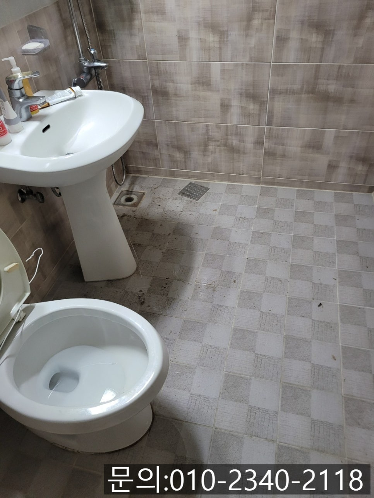
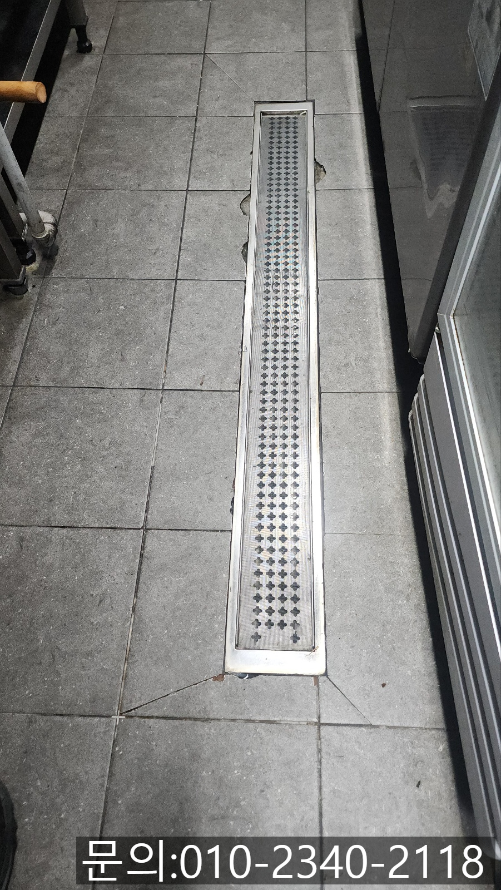
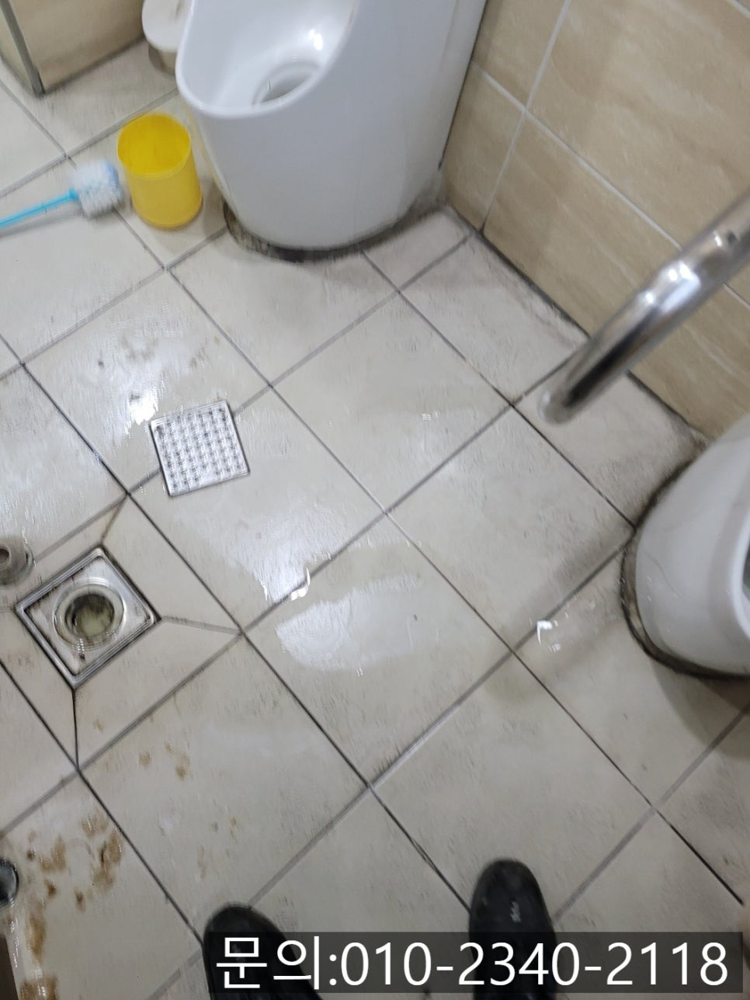
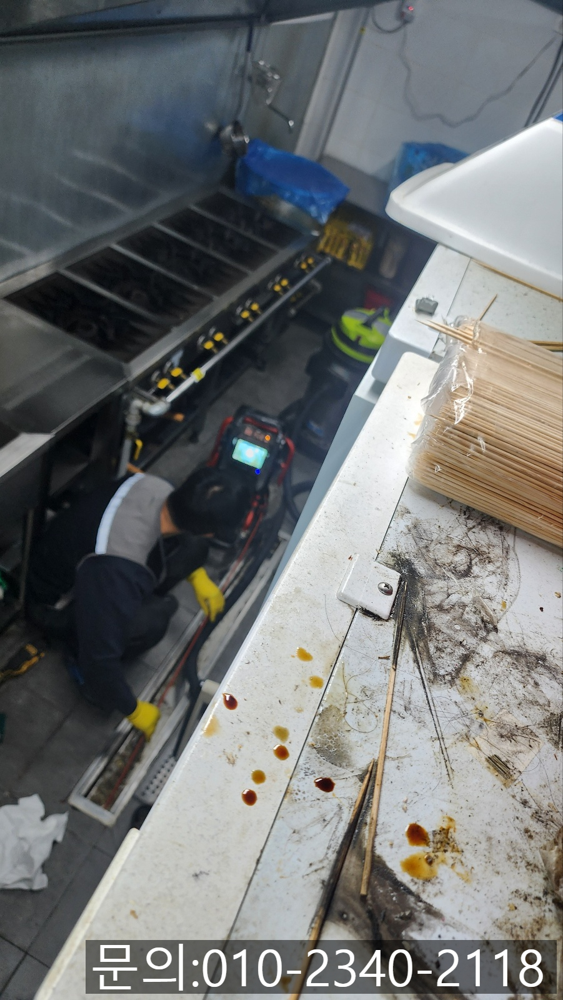
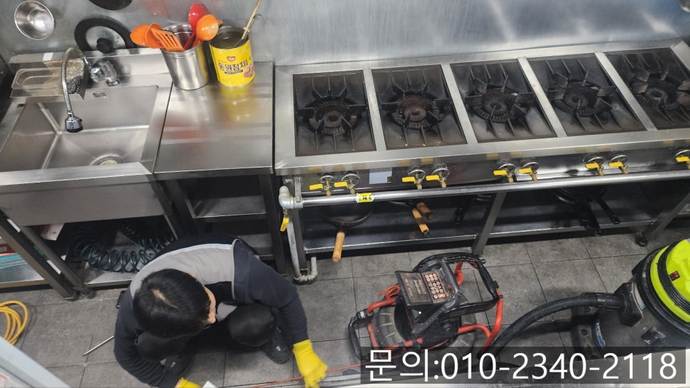
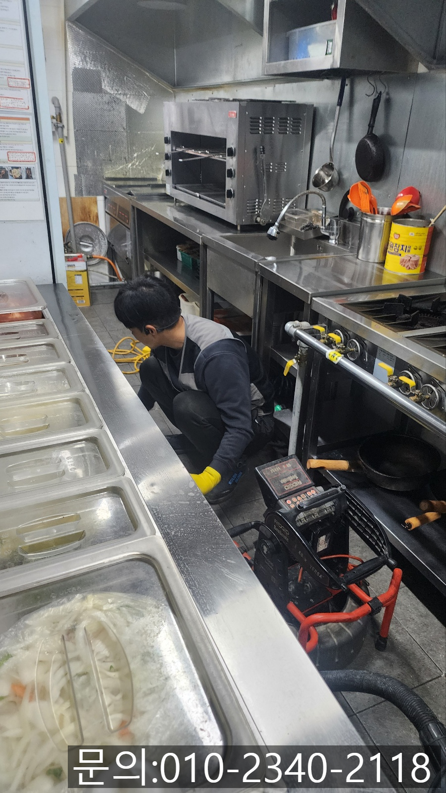

🏠 금곡동 하수구 막힘 분당 대장동 상가 화장실 역류 넘침 뚫는 설비업체
용인 대장동 하수구막힘 전문 시공 후기

📋 작업 개요
- 위치: 용인 대장동, 대장동, 용인
- 서비스 유형: 하수구막힘, 배관막힘, 맨홀막힘, 역류해결, 뚫는업체, 배관청소, 고압세척
- 작업 일시: 2025. 5. 11. 21:57
- 업체명: 하수구수사대 (010-5615-2118)
🔍 문제 상황
안녕하세요.
금곡동 하수구 막힘 분당 대장동 상가 화장실 역류, 넘침 뚫는 설비 업체 하수구 다큐입니다.
가게를 운영하다 보면 예기치 못한 일이 벌어지는 경우가 많습니다.
다양한 문제들 중에서도 화장실이나 주방 바닥 하수구에서 막힘이 발생하거나 물이 역류가 발생하게 되면 손님들의 불편을 넘어 가게의 매출까지 위협하는 심각한 문제예요.
특히 음식점처럼 물의 사용이 잦고 위생을 신경 써야 하는 업종의 경우 하수구 막힘으로 인해 역류하고 악취가 진동하게 된다면 타격이 클 수밖에 없습니다.
오늘 소개해 드릴 현장의 경우 주방과 화장실 두 곳에서 동시에 하수구 막힘으로 인해 역류가 발생했는데요.
이런 현장의 경우 단순히 하나의 배수구가 막힌 것이 아니라 상가 건물의 하수가 모이는 메인 배관에 문제가 발생했을 가능성이 높아 빠르게 원인을 찾아 해결해야 합니다.

🔎 원인 분석
💡 전문가 진단: 정밀 진단 장비를 사용하여 슬러지의 고착 여부를 판명하고 타격/세척 작업을 실시했습니다.
오늘 소개해 드릴 현장은 금곡동 하수구 막힘 현장인데요.
앞서 말씀드렸던 것처럼 상가 화장실과 주방 바닥이 동시에 막힌 건지 역류가 발생해 연락을 받고 신속하게 방문해 드렸어요.
현장에 도착해 보니 고객님께서 말씀해 주신 것처럼 화장실 바닥에 역류한 물이 빠져나가지 못한 상태였어요.
식당의 주방 역시 들어가 보니 트랜치 배관에 물이 역류한 상태였습니다.
금곡동 하수구 막힘으로 인해 주방 사용이 불편하다 보니 빠르게 원인을 찾아 해결해 드리기로 했습니다.
우선 석션 장비를 이용해 역류한 물과 이물질을 빨아들여 제거하고 금곡동 하수구 막힘이 배관 내부로 내시경 카메라를 진입시켜 막힘의 원인을 찾아보기로 했습니다.
내시경 카메라가 진입하자 기름 슬러지와 음식물 찌꺼기 등의 이물질로 인해 배관이 꽉 막혀있는 상태였어요.
주방과 연결되어 있는 배관 초입부터 메인 배관까지 꽉 막힌 상태로 배관 청소가 시급해 보였습니다.

🔧 작업 과정
아무래도 메인 배관이 막혀 화장실과 주방에서 동시에 문제가 일어나고 있는 만큼 건물 밖으로 나가 메인 배관을 점검해 보기로 했습니다.
맨홀의 뚜껑을 열어보니 엄청난 양의 기름 슬러지가 쌓여 있는 상태였어요.
석션을 이용해 쌓여있는 이물질을 제거하는 작업부터 진행했는데요.
워낙 양이 많다 보니 석션을 3통이나 비우고 나서야 추가 작업을 진행할 수 있었어요.
분당 대장동 상가 화장실 역류, 넘침 뚫는 설비 업체 하수구 다큐는 파이프를 이용해 배관으로 연결되는 길을 만들어준 다음 플렉스 샤프트를 사용해 청소를 진행했어요.
플렉스 샤프트 장비는 노즐 끝에 달려있는 체인이 배관 내부에서 회전하는 방식으로 쌓여있는 이물질을 제거하게 되는데요.
본체에 전동 드릴을 연결해 작동시키면 회전하는 힘을 전달받아 배관 내부에서 360도로 회전하면서 쌓여있는 이물질을 떨어트려주게 됩니다.
내시경 카메라를 이용해 기름 슬러지의 위치를 파악해가며 작업을 진행해 조금씩 제거가 되기는 했지만 건물이 큰 만큼 배관의 크기도 크다 보니 플렉스 샤프트로는 역부족이다 판단한 분당 대장동 상가 화장실 역류, 넘침 뚫는 설비 업체 하수구 다큐는 고객님께 배관의 상태와 상황을 자세히 설명해 드린 다음 고압세척 장비를 사용해 배관 청소를 진행하기로 했습니다.
고압세척 장비는 많은 양의 물을 짧은 시간 쏟아내며 배관에 쌓인 이물질을 제거해 주는 장비입니다.
높은 압력의 물을 사용하다 보니 넓고 긴 배관, 이물질이 많이 쌓인 배관을 청소하는데 탁월한 장비에요.
고압세척 장비를 사용해 배관에 쌓인 이물질을 제거하는 작업을 진행했습니다.
가게 장사를 위해 빨리 뚫어드렸어야 해서 배관 내부의 모습을 사진으로 남기지는 못했지만 고객님께는 내시경 카메라로 깨끗해진 배관 내부를 모두 보여드리고, 화장실 바닥과 주방 바닥에 많은 양의 물을 흘려보내도 아무런 문제가 없는 것까지 확인 시켜드린 다음 철수할 수 있었습니다.


✅ 작업 완료
하수구 막힘 현장을 다니다 보면 현장 상황이 예상했던 것과 다른 경우가 생각보다 많은데요.
하수구 다큐는 배관을 뚫는데 필요한 장비를 모두 챙겨 다니기 때문에 돌발 상황이 발생하더라도 당황하지 않고 문제를 해결해 드리고 있습니다.
지금 하수구 막힘으로 고민하고 계신다면 하수구 다큐로 연락 주세요.
완벽하게 뚫어드리겠습니다.




⚠️ 하수구 배관 막힘 예방 및 관리 가이드
- ✅ 머리카락, 비닐, 물티슈 등 물에 분해되지 않는 이물질은 하수구 유입을 절대 금지해 주세요.
- ✅ 하수구 거름망을 씌우고 모여진 이물질은 주기적으로 쓰레기통에 바로 비워주셔야 합니다.
- ✅ 배관 노후가 심할 경우 이물질이 더 쉽게 걸리므로 주기적인 배관 세척(고압세척 등)을 권장합니다.
- ✅ 작업 후 1년 이내 재발 시 하수구수사대에서 무상 A/S 보증 서비스를 제공합니다.
💡 핵심 정리
- 확실한 장비 작업(내시경 점검 및 샤프트 스케일링)으로 원인을 뿌리 뽑습니다.
- 작업 후 1년 이내에 동일한 부위 재발 시 100% 무상 A/S 서비스를 보장합니다.
- 서울 · 경기 · 인천 전 지역에 24시간 언제든 긴급 출동할 수 있도록 항시 대기 중입니다.
❓ 자주 묻는 질문 (FAQ)
🚨 용인 대장동 하수구막힘 문제로 고민이신가요?
정확한 원인 진단과 확실한 시공으로 재발 없는 해결을 약속드립니다.
24시간 긴급 출동 | 서울 · 경기 · 인천 전지역 | 1년 내 재발 시 무상 A/S